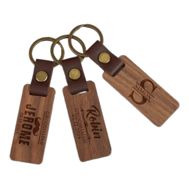
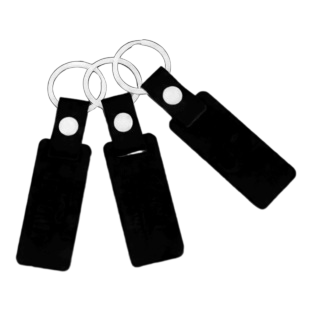
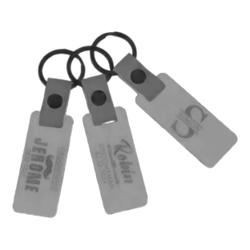
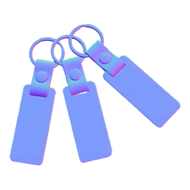
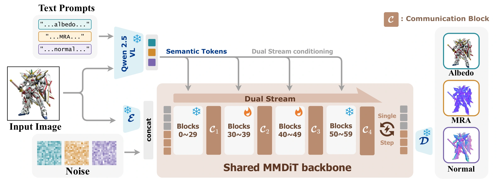
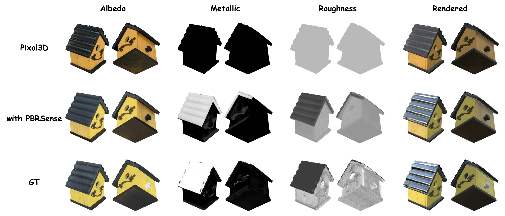

PBRSense: Single-Image PBR Estimation with VLM-Conditioned Image Editor
Single-Image PBR Estimation
with VLM-Conditioned Image Editor
1 MoE Key Lab of Artificial Intelligence, School of Computer Science, SJTU
2 Huawei Inc.3 Huazhong University of Science and Technology
*Equal contribution.‡Project lead.✉Corresponding authors.




TL;DR: PBRSense adapts a pretrained VLM-conditioned image editor to predict pixel-aligned albedo, metallic, roughness, and surface normals from a single image in one step. Its predictions also improve a frozen 3D material generator without additional training.
Abstract
Recovering the PBR (Physically based rendering) material properties of an object from a single image is a long-standing problem in computer vision and graphics. Traditional methods typically require multi-view inputs or controlled capture conditions and may take hours to solve the inverse rendering problem. Recent data-driven methods based on diffusion models can produce plausible material maps for in-distribution inputs but often struggle when the input falls outside the training distribution. VLM-conditioned image editing models provide a pretrained image-conditioned generation interface with language-controlled target specification. Whether such models can be adapted to predict PBR maps for general objects while addressing these limitations has not been systematically studied. In this paper, we propose PBRSense, which adapts a pretrained VLM-conditioned image editing model for pixel-aligned prediction of albedo, metallic, roughness, and surface normal maps from a single object image. Three attribute branches share the DiT backbone and use different text prompts to specify their prediction targets. We freeze the inherited VLM and VAE, selectively fine-tune DiT blocks, and use an endpoint velocity objective for single-step prediction. We compare trainable DiT ranges under a fixed training budget to inform the fine-tuning configuration. On the combined evaluation of two held-out benchmarks, the adapted model without communication already outperforms the evaluated baselines across the reported attributes; communication provides smaller additional gains. Qualitative results on real photographs illustrate its use beyond rendered inputs. Finally, using the predicted material maps as priors improves the material estimates of a frozen 3D generation model without additional training.
Gallery
Single-image predictions on held-out test sets and real photographs.
Test sets
Loading comparisons…
In the wild
Loading comparisons…
Pipeline

PBRSense adapts a pretrained VLM-conditioned image editor for pixel-aligned PBR prediction. Three parallel branches share the same MM-DiT backbone and use attribute-specific text prompts to predict albedo, material properties, and surface normals.
The pretrained VLM and VAE remain frozen. Selective DiT fine-tuning and an endpoint velocity objective enable single-step prediction, while lightweight cross-attribute communication further refines the predictions.
Quantitative results
Combined DTC + PolyHaven-315 results, weighted by the number of scoreable objects. Dashes mean the baseline did not report that attribute.
| Method | A-PSNR ↑ | A-siPSNR ↑ | M-RMSE ↓ | R-RMSE ↓ | N-angle ↓ |
|---|---|---|---|---|---|
| Intrinsic Image Diffusion | 13.251 | 19.037 | 0.252 | 0.226 | — |
| RGB↔X | 13.187 | 20.711 | 0.487 | 0.218 | 26.715 |
| IntrinsicAnything | 16.665 | 20.483 | — | — | — |
| Marigold | 8.993 | 19.302 | 0.272 | 0.277 | 17.280* |
| IDArb | 17.491 | 21.091 | 0.206 | 0.207 | 18.501 |
| SuperMat | 17.829 | 21.987 | 0.089 | 0.141 | — |
| Teamwork | 15.261 | 18.679 | — | 0.230 | 26.098 |
| DiffusionRenderer | 13.802 | 20.940 | 0.434 | 0.297 | 15.485 |
| Raw FireRed-1.1 | 14.468 | 18.367 | 0.363 | 0.294 | — |
| PBRSense w/o communication | 21.162 | 24.749 | 0.076 | 0.128 | 7.739 |
| PBRSense | 21.354 | 24.954 | 0.070 | 0.126 | 7.541 |
* Marigold uses a separate normal model. A = albedo, M = metallic, R = roughness, N = normals.
Training-free 3D material correction
PBRSense projects its albedo, metallic, and roughness predictions onto visible surfaces to guide material sampling in a frozen Pixal3D model. The comparison uses the same ground-truth geometry, cameras, sampling steps, and random seed. Evaluation covers 100 objects from DTC and 100 from PolyHaven, with one input view and one novel view per object.

| Method | Input view | Novel view | ||||
|---|---|---|---|---|---|---|
| Albedo | Metallic | Roughness | Albedo | Metallic | Roughness | |
| Raw Pixal3D | 0.126 | 0.227 | 0.146 | 0.149 | 0.243 | 0.153 |
| w/ IDArb | 0.148 | 0.439 | 0.178 | 0.141 | 0.304 | 0.145 |
| w/ PBRSense | 0.094 | 0.184 | 0.110 | 0.124 | 0.217 | 0.121 |
Fine-tuning study
Under a fixed 4,000-step training budget, updating blocks 29–49 gives the lowest metallic and roughness errors in this comparison. Full DiT fine-tuning gives stronger albedo and normal results. All variants use the same communication configuration.
| Variant | A-PSNR (dB) | M-RMSE | R-RMSE | N-angle (°) |
|---|---|---|---|---|
| Front | 19.300 | 0.1916 | 0.1714 | 11.861 |
| Tail | 19.882 | 0.1455 | 0.1631 | 10.565 |
| PBRSense | 20.318 | 0.1171 | 0.1580 | 9.365 |
| All | 20.534 | 0.1223 | 0.1597 | 8.930 |